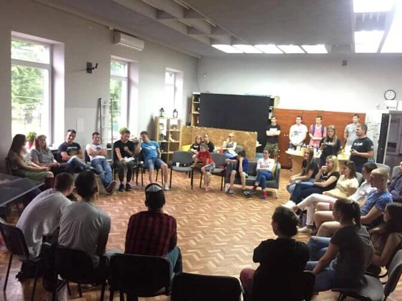
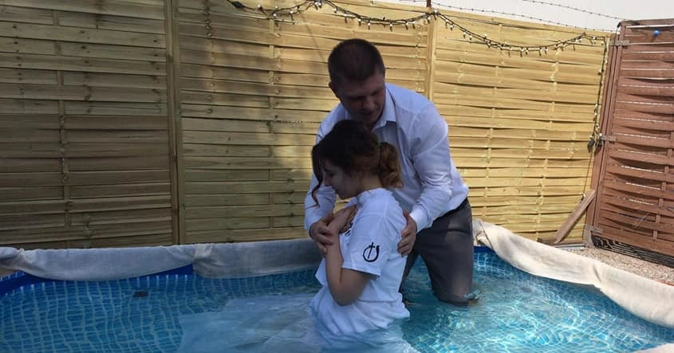

 Мы миссионерская церковь, мы никак не являемся коммерческой организацией, наша цель – это спасение людей и жизнь по слову Божьему. Мы стремимся к искренности в отношениях с людми и верности Богу. Мы не считаем себя лучше других потому что мы христиане. Мы такие же грешники как и люди в миру, просто мы пришли к лучшему доктору – Иисусу Христу, который однажды оддал за нас жизнь, что бы всякий верующий в него не погиб, но смог провести с ним вечность на небесах. Если у тебя проблемы, то мы знай: есть выход и это Иисус христос. Помни мы всегда ждем тебя в нашей дружней семье. Приходи к нам на служения, и мы с радостю познакомимся с тобой. А если ты еще не знаком со своим Спасительем, поможем тебе с Ним познакомиться :)) (Расписания служений находятся в разделе служения)
История церкви
 Церковь «Божий Свет» была создана, благодаря Богу, в 2017 году. Наша история начинается из откровения, которое получила одна верующая семья. Несколько лет назад, одна семья полностью посветила себя на служение Богу, и когда о них молились и благословляли, одна американка видела видение, и сказала этой семье: «Я часто вижу какие-то ведения, и сейчас я выдела длинную арку, как алею. И вот вы шли вместе по этой алее, и когда вы проходили под этими перекладинами, я видела, как вы мирно идете вместе. И эта алея продолжалась и покрывала вас все это время. И сверху было много листьев и рос виноград, и прямо грозди виноградов свисали. Потом я видела много детей, которые подбегали в тень, которую давала эта арка, и я видела безопасность, которая была там, в тени . Я чувствовала, что Господь говорил: Когда вы будете идти, то Я буду покрывать вас этой тенью, вам не нужно беспокоиться о какой то погоде плохой или о каких то еще бурях, вы должны идти со Мной и идти друг с другом. И когда вы будете идти вместе, то Я буду обеспечивать для вас покров. И в этом покрове будет очень много плода. А дети — это духовные дети, а не физические. Они представляют молодых верующих, которые пришли. Они будут видеть в вас дух мамы и папы, и будут привлечены к вам, потому что они будут видеть безопасность в ваших отношениях. И они будут видеть отцовство и материнство в вас, и безопасность покрова под вами.» И эта семья, послушно Богу, оставив всё, приехала в Польшу и начала служить. Со временем, когда она служили в другом городе, Бог давал много откровений, и одно с них, было то, что они будут служить в Люблине. Пришло время, Бог послал их в Люблин, было много испытаний, но они твёрдо стояли в вере, служа людям. Приехав сюда, начали собираться в одном помещении. Видя искрение сердца этих людей, к ним начали приходить студенты, потому что чувствовали их любовь к Богу, и желание служить, и они зажигались этим желанием и искренно служили Богу. Со временем, проводили разные служения, евангелизации, молодежные конференции, и т.д. Это привлекало молодёжь, и много молодых людей начало все больше приходить к Богу, и расти в Нём! Пришло время, и мы понимали, что нам мало места в этом помещении, и мы молились, просили Бога, чтобы Он дал нам другое помещение, где мы сможем принимать других людей, и будет для них место. Бог не оставил, и не молчал, Он сказал, через одну молодую девушку, которую звали Аня, что даст нам новое помещение, через два месяца. Мы ждали, дальше молились о воле Божьей. И вот проходило время, почти два месяца, а у нас все не было нового помещения. Осталось всего несколько дней, мы понимали что срок истекает, но Бог верен Своему слову (Титу 1:2) и Он всегда делает то что обещает. И почти в последней день этого срока, у нас появляется новое помещение, по доступной нам цене. Собирались студенты, много молодых людей, и все они чувствовали отцовство и материнство, так как говорилось в этом откровении. Сейчас церковь посещает много молодых семей, студентов, и просто людей, которые хотят служить Богу и горят для Него! Наверное самое интересное, кто эти люди, которые получили откровение. Это наш пастырь – Александр Кулько, и его послушная Богу жена – Лариса! Они воспитывают трое детей, и в то же время, они являются духовными родителями для этих молодых людей. Так началась история нашей Церкви. Сейчас мы продолжаем служить Богу, открывать новые церкви, проповедовать людям, говорить о любви Божьей. А самое главное — мы проповедуем Христа Распятого, мы — Его дети, и наше сердца горят для Него.
Во что мы верим?
- В Единого благого Бога, вечно пребывающего в трех Лицах (ипостасях), а именно: Отца, Сына и Святого Духа.
- В Иисуса Христа, Единородного Сына Божьего, зачатого от Духа Святого и рожденного от Девы Марии. Верим, что Иисус Христос был распят за грехи всех людей, погребен и воскрес из мертвых. Что Он вознесся на небо и в настоящее время находится одесную Отца.
- Мы верим, что человек сотворен по образу Божьему как венец и цель всего творения. Но из-за греха человек утратил отношения с Богом, а потому каждый человек нуждается в покаянии перед Богом для прощения грехов.
- Мы верим, что по вере в жертвенную смерть и воскресение Иисуса Христа каждый человек получает прощение грехов и вечную жизнь, рождается заново (свыше), становится дитем Божьим и получает дар Святого Духа.
- Мы верим, что каждый, кто покаялся и уверовал в Христа, должен вступить в завет с Господом через водное крещение.
- Мы верим, что Церковь есть Тело Христово. Церковь создана Христом и объединяет всех верующих в Него во все времена. Принадлежность Церкви Христовой выражается через принадлежность и деятельное участие в жизни поместной общины.
- Мы верим, что Причастие (Вечеря Господня) есть заповедь Господа для Церкви. Элементы Причастия – хлеб и вино – суть Его Тело и Кровь. Достойно участвуя в них, верующие обновляют свою связь с Христом, соединяются с Господом и Его Церковью, получают помощь от Бога для благочестивой жизни.
- Мы верим, что Библия есть богодухновенное Слово Божье и является абсолютным авторитетом в вопросах веры и практики жизни Церкви.
- Мы верим, что каждый христианин призван следовать за Христом, что выражается в развитии отношений с Господом, служении Богу и людям и благовестии о Христе неверующим. Добросовестный и творческий труд в соответствие с личным призванием и дарами есть способ служения Господу и утверждения Его Царства в этом мире. Цель жизни христианина – преображение в образ Христа, совершающееся действием Святого Духа при активном содействии верующего. Этот процесс происходит на протяжении всей жизни христианина.
- Мы верим в крещение (исполнение) Святым Духом – облечение силой свыше для служения Господу и свидетельствованию о Нем.
- Мы верим в действие всех даров Святого Духа в Церкви Христовой на протяжении всего времени от Дня Пятидесятницы до Пришествия Господа.
- Мы ожидаем Второго Пришествия Господа Иисуса Христа во славе, воскресения мертвых и Последний Суд. Мы верим, что после Суда произойдет преображение всего мироздания – установление Царства Божьего.
Наша команда


Саша Кулько
Основатель Церкви

Игорь Бубен
Пастор

Мария Бубен
Финансовое служение

Ян Лукасик
Служение прославления

Вера Володина
Женское служение

Aнна Троць
Администратор
Добровольное пожертвование
Если вы желаете поддержать наше служение по распространению Евангелия и насаждению новых церквей в Европе, Вы можете отправить нам поддержку по этим реквизитам:
IBAN: PL64 1240 2496 1111 0010 8512 4218
SWIFT: PKOPPLPW
Kościół chrześcijański BOŹE ŚWIATŁO